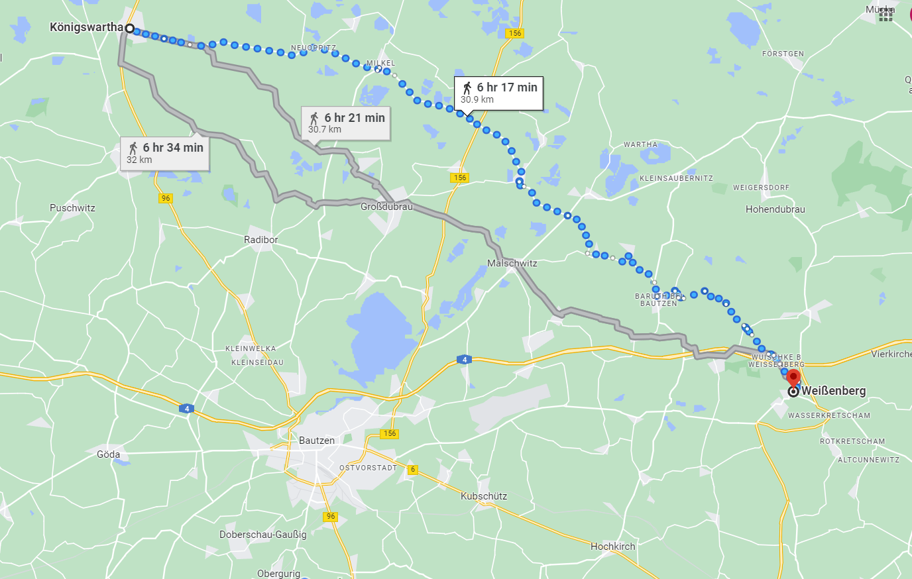
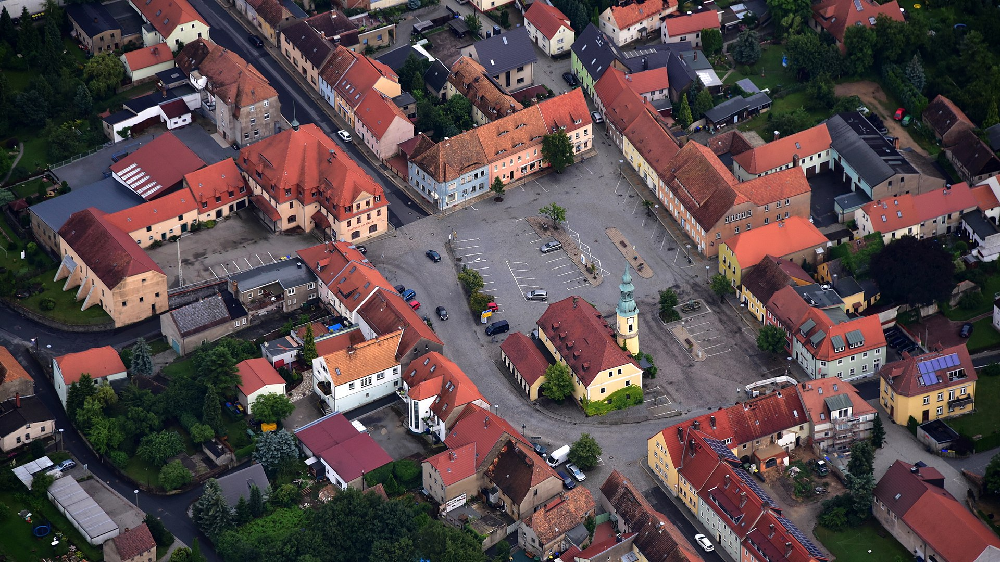
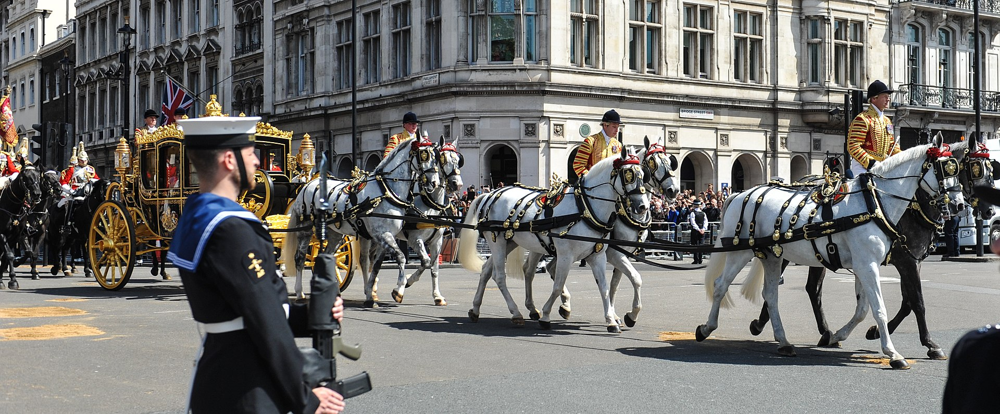

바우첸 전투 (3) - 노란 제복의 정체
게시: 2023-04-24T06:30:30+09:00
5월 20일에서 21일로 넘어가는 자정 무렵, 연합군의 상황은 그다지 좋지 않았습니다. 나폴레옹은 전날 오후의 공격으로 슈프레 강을 성공적으로 건넜을 뿐만 아니라 연합군과 멱살을 쥔 상태, 즉 연합군 최전선과 고작 200m 간격을 사이에 둔 채로 밤을 보내게 되었는데, 이는 뤼첸 전투 때처럼 밤 사이에 연합군이 몰래 후퇴해버리지 않을까 걱정하던 나폴레옹이 원하던 바였습니다. 이런 중대한 상황에서 열린 연합군 수뇌부의 작전 회의는 그만큼 중요했습니다. 그런데 프로이센군에서는 프리드리히 빌헬름은 물론, 총사령관인 블뤼허가 참석하지 않고 그나이제나우와 국왕의 연락 장교인 뮈플링(Müffling)만 참석했습니다. 노령인 블뤼허는 피곤하여 쉬어야 했고, 어차피 프로이센군의 실세는 그나이제나우였기 때문이었습니다. 러시아군에서도 멀리 북쪽의 연합군 우익 맨끝을 담당하고 있던 바클레이는 참석하지 않았고, 그 날 밤의 회의는 비트겐슈타인이 아니라 비트겐슈타인을 병풍으로 세워둔 짜르 알렉산드르가 주재했습니다. 문제는 회의 진행을 누가 하느냐가 아니었습니다. 이미 알렉산드르는 모든 결론을 정해놓고 있었던 것이 문제였습니다. 그는 전날 오후 우디노의 공격 방향을 보면 나폴레옹은 내일 공격에서도 연합군의 좌익에 집중할 것이 틀림없다고 단언했습니다. 사람은 누구나 잘못 판단을 내릴 수 있는 법인데, 지위가 높은 사람일 수록, 그리고 남의 인정을 받고 싶은 사람일 수록 자신이 잘못된 판단을 내렸다고 인정하기가 어려운 법입니다. 더군다나 나폴레옹은 연합군의 좌익을 공격하려는 것처럼 페인트 모션을 잔뜩 보여준 바 있었으니 알렉산드르는 더더욱 나폴레옹의 주공격 방향은 연합군의 좌익, 즉 오스트리아와의 국경 방향인 남쪽이 될 것이라고 전날과 동일한 입장을 고집했습니다. 그러나 프로이센군은 자신들이 전날 경험한 바로나 인근 일대에서 들어온 정찰 보고에 따르면 자신들이 맡은 우익 쪽이 나폴레옹의 진짜 노리는 곳이라고 반발했습니다. 특히 북쪽에서 로리스통 뿐만 아니라 뭔가 더 강력한 군단이 내려오고 있는 것이 바클레이와 요크의 19일 전투 및 정찰로 확인 되었는데, 그것은 아마도 네의 군단일 것이라고 주장했습니다. 하지만 프로이센군의 이런 주장은 '그렇다면 정작 북쪽 바클레이가 맡은 전선에서는 왜 전날 오후에 프랑스군의 움직임이 없었느냐'라는 알렉산드르의 반문에 입지가 애매해졌습니다. 뮈플링은 아마도 네가 노리는 것은 바클레이가 막고 있는 말슈비츠(Malschwitz) ~ 글레이나(Gleina) 전선이 아니라 훨씬 동쪽인 바이센베르크(Weißenberg)로 우회하는 것으로서, 연합군의 퇴로 자체를 끊어버리는 것일지도 모른다고 주장했습니다. 하지만 바클레이가 가진 1만5천의 병력이면 북쪽에서 누가 내려오든 충분히 막아낼 수 있는 병력이라는 알렉산드르의 주장에 프로이센군은 딱히 반박하지 못했습니다. 실제로 전체 병력이 10만이 채 안 되었던 연합군에서 1만5천이라는 병력은 상당한 비중이었습니다. 이렇게 연합군 작전 회의는 그 다음 날 프랑스군이 연합군의 좌익 끝 부분을 들이칠 것이라는 결론과 그에 따른 병력 배치로 끝났습니다.

(바이센베르크는 바우첸보다 훨씬 더 동쪽으로 떨어진 마을인데, 여기를 점령하면 연합군의 후퇴로가 막히는 셈이었습니다. 네가 있던 쾨니히스바르타에서는 하루종일 행군해야 닿을 수 있는 거리였습니다.)

(오늘날의 바이센베르크의 모습입니다. 지금도 작은 마을로서, 인구는 3천에 불과합니다. 이렇게 작은 마을인 바이센베르크에서는 지리적 중요성에도 불구하고 다행히 그 이전에도 그 이후에도 별다른 전투가 없었는데, WW2 때 소련군이 쳐들어오면서 이 마을도 포격을 받아 불탔다고 합니다.) 프랑스군의 공격은 그나이제나우가 짜르의 사령부로부터 크렉비츠의 프로이센군 사령부로 돌아가기도 전인 오전 4시에 전체 전선에 걸친 대규모 포격을 시작으로 재개되었습니다. 보병들의 공격은 해가 뜬 이후에 시작되었는데, 이때 연합군 측에서 전황을 관측하던 영국 대사 캐쓰카트 장군이 보기에도 프랑스군의 집결 형태를 보면 연합군의 좌측 또는 중앙을 돌파하려는 것 같았습니다. 이때 캐쓰카트의 기록에 따르면 나폴레옹이 저 멀리서 휘하 원수들과 함께 병력의 집결과 이동을 직접 지휘하며 손을 뒷짐을 진 채 이리저리 걷는 모습이 자기를 포함한 연합군 장군들의 눈에도 보였다고 합니다. 멀리서 보이는 옷차림과 몸매로 '저 사람이 나폴레옹이고 저게 베르티에'라는 것이 인식될 정도였으니, 당연히 나폴레옹은 연합군 포병대의 사거리 안에 들어와 있는 상황이었습니다. 그러나 당시의 유럽 전장의 예의상, 나폴레옹을 향해 대포알을 날리라는 명령은 없었습니다. 현대식 저격 소총도 아니었으니 어차피 쏜다고 해도 나폴레옹이 그런 대포알에 맞을 확률은 지극히 낮았고, 그저 '예의도 없는 러시아-프로이센놈들'이라는 욕만 먹을 것이 뻔했기 때문이었습니다. 다만 나폴레옹 바로 옆에 어떤 밝은 노란색 제복을 입은 인물이 있었고 나폴레옹은 지도를 펼친 채 그 사람과 손짓을 해가며 자주 이야기하는 모습이 연합군 장군들 눈에 목격되었습니다. 누군지 모르겠으나 매우 중요한 인물로 보였는데, 프랑스군 주요 인물들과 전에 자주 만났던 프로이센-러시아군 장군들도 그가 누군지 쉽게 알아보지는 못했습니다. 그러다 누군가 저렇게 대담한 노란색 군복을 입은 것을 보면 저 사람은 틀림없이 나폴리 왕 뮈라라고 주장을 했고, 모두들 그 주장에 동의하게 되었습니다. 이건 또 다른 문제였습니다. 이탈리아 남부의 나폴리 왕국으로 돌아갔다고 알려진 뮈라가 여기에 나타났다는 것은, 그가 남부 이탈리아에서 긁어모은 병력이 이미 바우첸 현장에 도착했다는 의미였기 때문이었습니다. 그러나 그 날 오후 늦게 그 노란색 제복남의 정체가 밝혀졌습니다. 그 날 포로가 된 프랑스군 장교의 말을 들어보니, 그 노란색 제복남은 그 동네 출신인 어떤 작센인 마부였고, 나폴레옹은 그 마부에게 눈 앞에 흩어져 있는 이런 저런 마을들의 이름을 묻고 있었다는 것이었습니다. 나폴레옹이 가진 지도에도 바우첸 일대의 마을 이름과 위치가 그다지 정확하지 않았으므로, 현지 사정에 밝은 길잡이 없이는 전장의 지리를 파악하기 어려워서 발생한 촌극이었습니다. 그 상황에서는 허풍선이 뮈라보다는 그 마부가 훨씬 더 도움이 되는 존재였을 것입니다.

(여기서 마부라고 표현된 사람의 직책은 영어로 postilion으로서, 보통 귀족들의 마차를 끄는 한 쌍의 말 중 한 마리에 직접 올라타 말을 모는 사람입니다. 사진은 2015년 런던에서 의회 개원식에 참석하러 가는 영국 여왕의 마차를 끌고 있는 postilion들의 모습입니다.) 이런 재미있는 일화와는 별도로, 우디노는 해가 뜨자 알렉산드르에게 보여주듯이 연합군 좌익을 향해 맹렬한 공격을 시작했습니다. 중앙의 막도날은 전날과는 달리 정면으로 공격하는 대신 우디노의 공격을 지원하는 듯한 움직임을 보여주었습니다. 좌익이 아니라 우익이 나폴레옹의 진짜 목표물이라고 주장하던 프로이센군이 머쓱하게도, 바로 전날 저녁까지 프로이센군이 지키고 있던 키페른 언덕 방면에 대해 꽤 진지하게 공격을 퍼붓던 술트와 마르몽은 해가 뜨고 나서도 별다른 공세를 펼치지 않았습니다. 알렉산드르는 신이 났습니다. 그의 예측이 맞았던 것입니다. 연합군의 긴 방어선 뒤에서 러시아군의 예비 병력은 좌측으로 몰렸습니다. 그러나 아침 6시 경이 되자, 북쪽에서 갑자기 나타난 약 2~3만의 프랑스군이 글레이나 언덕 쪽을 향하는 모습이 목격되었습니다. 이들은 술트 휘하도 마르몽 휘하도 아니었습니다. 바로 네의 부대들이었습니다. 이 소식은 즉각 중앙의 알렉산드르에게도 보고되었지만 알렉산드르는 큰 신경을 쓰지 않았습니다. 그는 전체 전투의 결전장인 연합군 좌익에 정신이 팔려 있었고, 이미 글레이나에는 바클레이의 1만5천이 배치되어 있었기 때문이었습니다. 블뤼허도 뮈플링을 글레이나의 바클레이에게 급파하여 그 쪽으로 프랑스군이 향하고 있으니 전날 밤 논의된 바에 따라 잘 방어하기를 바란다는 소식을 보냈습니다. 그러나 뮈플링으로부터 당장 30분 안에 약 2만의 프랑스군이 들이닥칠 거라는 소식을 전해들은 바클레이의 표정이 좀 이상했습니다. 바클레이는 의아해 하는 뮈플링을 데리고 풍차 방앗간 주인집으로 들어간 뒤 뮈플링에게 놀라운 이야기를 털어놓았습니다. Source : The Life of Napoleon Bonaparte, by William Milligan Sloane Napoleon and the Struggle for Germany, by Leggiere, Michael V
https://en.wikipedia.org/wiki/Wei%C3%9Fenberg https://en.wikipedia.org/wiki/Postilion